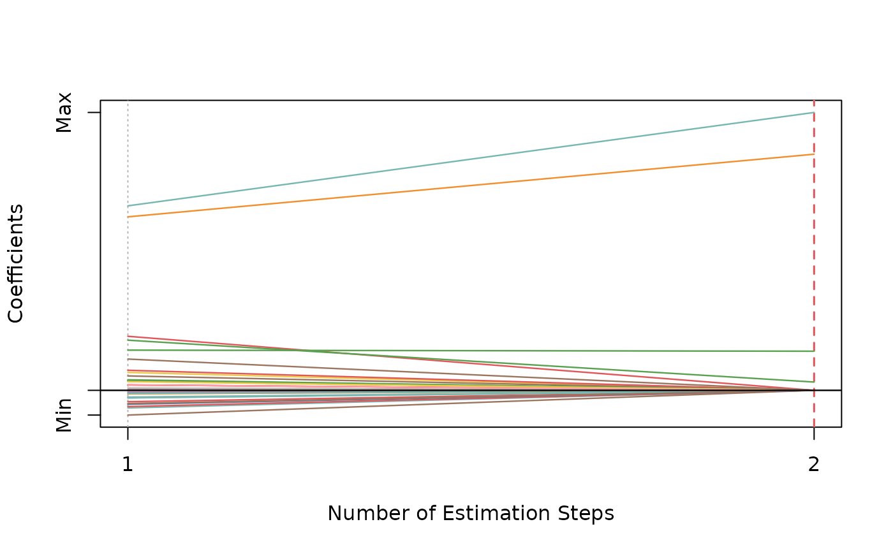

Adaptive SCAD-Net
Usage
asnet(
x,
y,
family = c("gaussian", "binomial", "poisson", "cox"),
init = c("snet", "ridge"),
gammas = 3.7,
alphas = seq(0.05, 0.95, 0.05),
tune = c("cv", "ebic", "bic", "aic"),
nfolds = 5L,
ebic.gamma = 1,
scale = 1,
eps = 1e-04,
max.iter = 10000L,
penalty.factor.init = rep(1, ncol(x)),
seed = 1001,
parallel = FALSE,
verbose = FALSE
)Arguments
- x
Data matrix.
- y
Response vector if
familyis"gaussian","binomial", or"poisson". Iffamilyis"cox", a response matrix created bySurv.- family
Model family, can be
"gaussian","binomial","poisson", or"cox".- init
Type of the penalty used in the initial estimation step. Can be
"snet"or"ridge".- gammas
Vector of candidate
gammas (the concavity parameter) to use in SCAD-Net. Default is3.7.- alphas
Vector of candidate
alphas to use in SCAD-Net.- tune
Parameter tuning method for each estimation step. Possible options are
"cv","ebic","bic", and"aic". Default is"cv".- nfolds
Fold numbers of cross-validation when
tune = "cv".- ebic.gamma
Parameter for Extended BIC penalizing size of the model space when
tune = "ebic", default is1. For details, see Chen and Chen (2008).- scale
Scaling factor for adaptive weights:
weights = coefficients^(-scale).- eps
Convergence threshold to use in SCAD-net.
- max.iter
Maximum number of iterations to use in SCAD-net.
- penalty.factor.init
The multiplicative factor for the penalty applied to each coefficient in the initial estimation step. This is useful for incorporating prior information about variable weights, for example, emphasizing specific clinical variables. To make certain variables more likely to be selected, assign a smaller value. Default is
rep(1, ncol(x)).- seed
Random seed for cross-validation fold division.
- parallel
Logical. Enable parallel parameter tuning or not, default is
FALSE. To enable parallel tuning, load thedoParallelpackage and runregisterDoParallel()with the number of CPU cores before calling this function.- verbose
Should we print out the estimation progress?
Author
Nan Xiao <https://nanx.me>
Examples
dat <- msaenet.sim.gaussian(
n = 150, p = 500, rho = 0.6,
coef = rep(1, 5), snr = 2, p.train = 0.7,
seed = 1001
)
asnet.fit <- asnet(
dat$x.tr, dat$y.tr,
alphas = seq(0.2, 0.8, 0.2), seed = 1002
)
print(asnet.fit)
#> Call: asnet(x = dat$x.tr, y = dat$y.tr, alphas = seq(0.2, 0.8, 0.2),
#> seed = 1002)
#> Df Lambda Gamma Alpha
#> 1 4 0.3104638 3.7 0.8
msaenet.nzv(asnet.fit)
#> [1] 2 4 5 35
msaenet.fp(asnet.fit, 1:5)
#> [1] 1
msaenet.tp(asnet.fit, 1:5)
#> [1] 3
asnet.pred <- predict(asnet.fit, dat$x.te)
msaenet.rmse(dat$y.te, asnet.pred)
#> [1] 2.693865
plot(asnet.fit)
